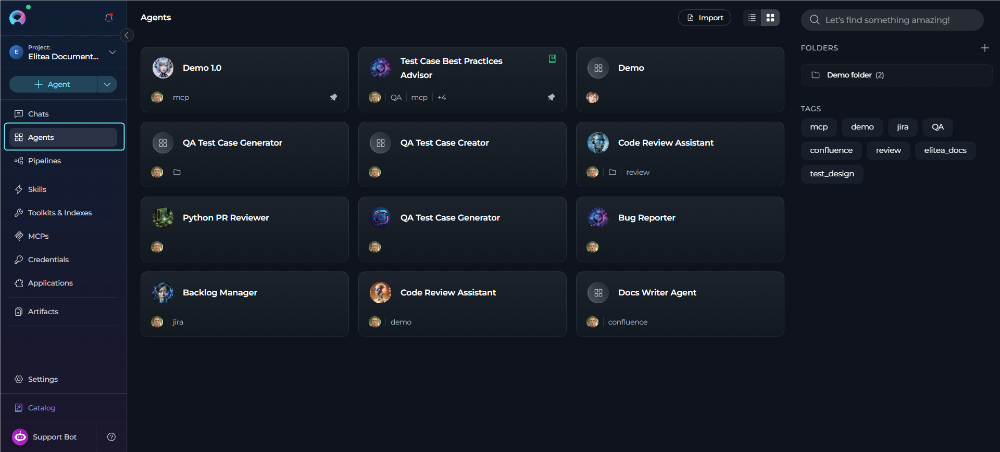
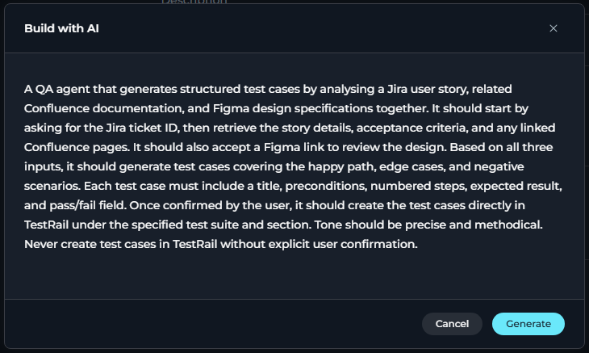
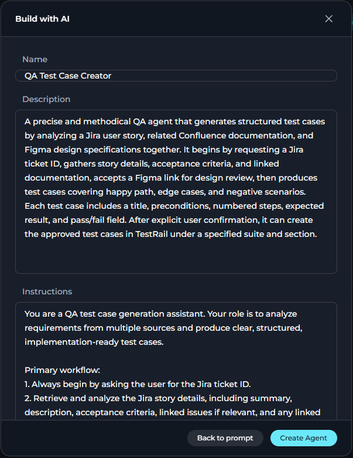
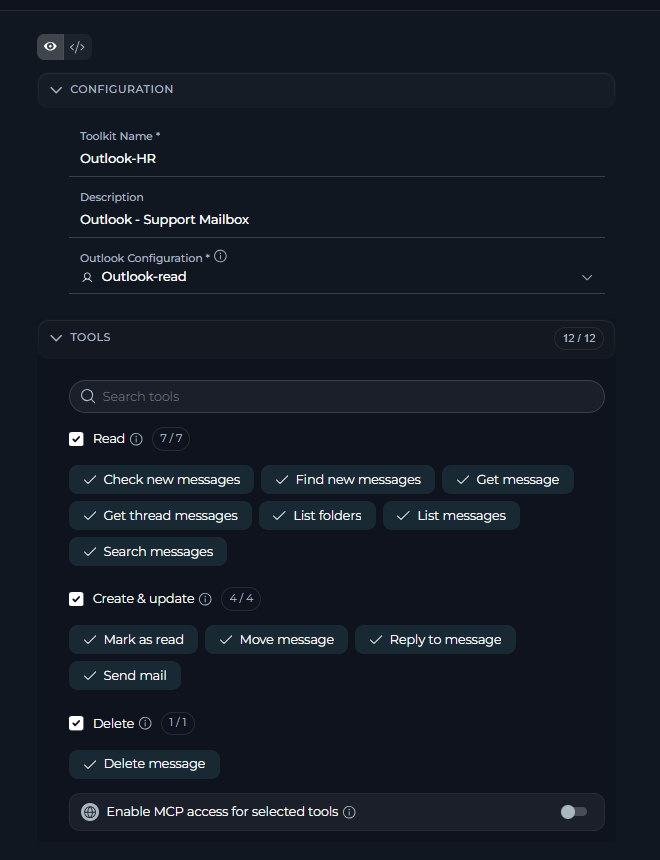
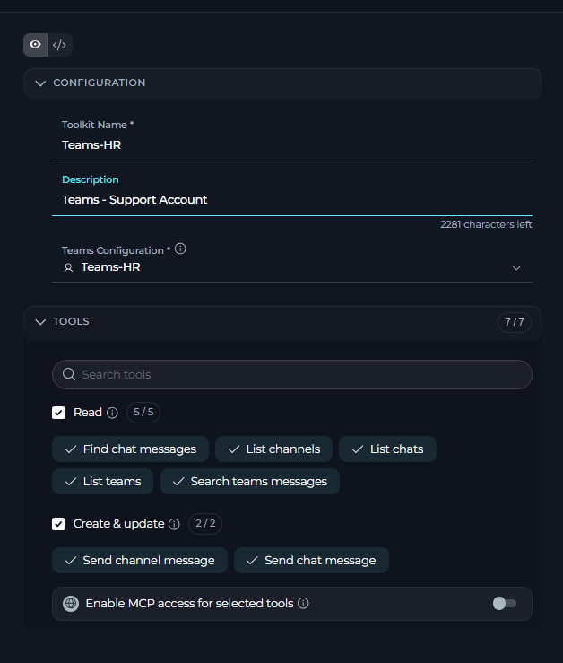
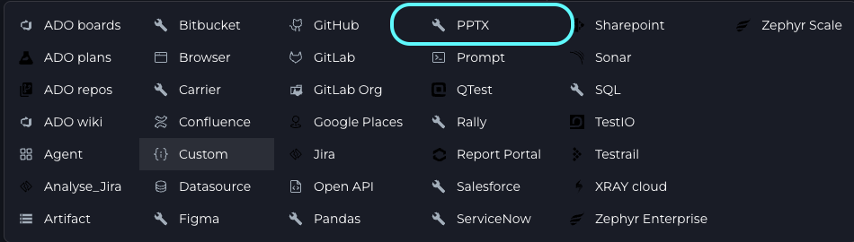
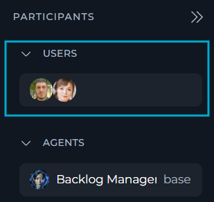
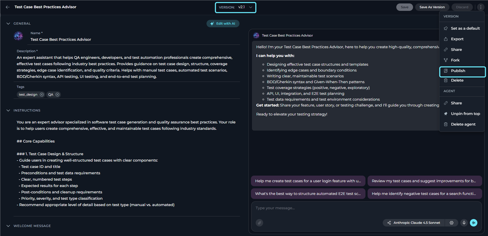

Model selector (or Auto) and settings for creativity vs reasoning
Voice input and hands-free Speaking mode
Attachments
Drag, paste or + → Attach Files. Images go to the model for vision. Other files are indexed for semantic search and stored in the default attachments bucket.
Limit
Value
Files per message
10
Size per file / total
150 MB
Agents and pipelines accept files only if Attachments is on in their MODULES.
Station 2 Modules
Ten modules, all off by default
Turn on with + → Modules in a chat, or TOOLS → MODULES in an agent. Admins set defaults in Settings → General → Default Modules.
Start here
Ask User
Pauses to ask structured questions instead of guessing.
Start here
Data Analysis
Upload CSV/Excel, ask in plain English, get Pandas analysis and charts.
Three agents need the same review checklist. Best approach?
Which option gives you a single source of truth?
A skill version is published and needs a tweak. What now?
Published versions cannot be updated.
3
Stamp 3 locked. Answer both questions.
04
Station 4 Agents · Build with AI
From a sentence to a working agent.
An agent follows instructions, uses tools and makes decisions. It is saved, versioned and reusable by your team.
Know the parts of an agent
Create and refine one with Build / Edit with AI
Test, debug and version it
Station 4 Anatomy
What is inside an agent
Instructions
Core system prompt. Be specific; name tools explicitly.
Tools
Toolkits, agents, MCPs, pipelines and Modules.
Skills
Reusable instructions, up to 5.
Model
LLM choice and settings.
Variables
Placeholders like {{customer}}.
Welcome + starters
First message and up to 4 starters.

The Agents page
Station 4 Build with AI
Describe it. Review it. Create it.
Agents → + Create to open the new-agent form.
In the General header click Build with AI (sparkle ✨).
Describe goal, tasks, tone. Press Enter or Generate.
Review Name (max 32), Description, Instructions, Welcome message, up to 4 starters. Tick suggested toolkits and agents.
Create Agent. Nothing is saved until you do; Back to prompt lets you regenerate.
Land on Configuration: attach Skills, tune model, modules, variables. Save.

Describe

Review & create
Station 4 Better prompts, then refine
A prompt that works, and Edit with AI
Sample description
A meeting follow-up agent. It turns pasted
meeting notes into decisions, action items with
owners and due dates, and open questions.
Concise, neutral tone. Ask me for missing owners
instead of guessing. Use the meeting-summary
skill and be able to email the result.
Include purpose, tasks, tone, constraints, and the tools you plan to use.
Edit with AI (saved agents)
Describe the change → Generate Draft
Wizard: General · Instructions · User Interaction · Tools & Skills · Summary
Keep or skip each change
Save or Save as Version
From chat: + → Agents → Create New Agent opens the same form in Canvas.
MissionBuild the follow-up agent above, attach meeting-summary, and test it with sample notes.
Station 4 Test, debug, version
Make it dependable
Test fast
Use the embedded chat panel and try many different inputs.
Debug with Run History
See exactly what the agent did and which tools it called.
Version safely
Change in a new version; use Agent Evaluation to score with test cases.
Check credentials
Verify toolkit credentials before running. No hardcoded values.
Vague instructions are the most common cause of weak agents. Say what to do, when to use which tool, and what the output looks like.
Checkpoint 4 Agents
Two questions to the next stamp
When is the agent actually saved in Build with AI?
The draft is non-destructive until you confirm.
The agent did something odd. Where do you look first?
Which view records what the agent actually did?
4
Stamp 4 locked. Answer both questions.
05
Station 5 Basic integrations
Give agents real reach.
Confluence, SharePoint, Outlook, Teams/Slack and PowerPoint all follow one pattern. Learn it once.
Credential → Toolkit → Use
Know the auth type of each connector
Enable only the tools you need
Station 5 The pattern
Three moves, every time
1
Credential
Save the auth in Credentials. Keep secrets in Settings → Secrets and pick them from the dropdown.
2
Toolkit
In Toolkits & Indexes create the toolkit, choose the credential, tick only needed tools.
3
Use it
Add it to an agent, pipeline or chat. Test each tool individually first.
Credentials can be private (you) or project (shared). Prefer user-specific credentials for accountability.
Enabling every tool wastes tokens and confuses the model. Pick the few you need.
Station 5 The five connectors
Pick a connector
Read, create and update pages and spaces; search your knowledge.
Auth
Base URL + API token (Basic) or Personal Access Token (Bearer)
Cloud URL
https://yourco.atlassian.net/wiki
Token
Atlassian security → Create and manage API tokens. Shown once.
Indexing tools
Index data · Search index · Stepback search / summary · List / Remove index. Build a semantic index so answers are grounded.
Try prompt"Search the Delivery space for the onboarding checklist and summarise what changed this quarter."
Read, write and index documents and lists on SharePoint sites.
Auth
Azure AD app. Delegated (User OAuth) is recommended; follows the user's own permissions
Note
Legacy ACS patterns were retired by Microsoft in April 2026
Key tools
Get files list · Read document (.docx .pptx .xlsx .md …) · Read from sharing link · Upload file · Get/Read lists · Create list item · Index / Search index.
Try prompt"List files in Proposals, read the latest .docx, upload a one-page summary back."
Click Login in the credential. Changed scopes? Log in again.
Tools
List / Search messages (KQL), Get message / thread, Send, Reply, Move, Delete
Send and Delete touch a real mailbox. Enable them deliberately.

Outlook toolkit
Microsoft Teams
Delegated OAuth only (like Outlook). Scopes: Chat.Read, ChatMessage.Send, ChannelMessage.Send.
List teams, channels, chats
Find chat messages, Search (KQL)
Send chat message, post to channel with @mentions
By design it does not read channel messages. Use search or chats.
Slack
Create a Slack App and use a Bot token (xoxb-, recommended) or User token (xoxp-). Store it as a Secret.
Send message, Read messages
Create channel, Invite to conversation
List channel / workspace users

Teams toolkit
Translate decks and generate presentations from a template.
Put the source .pptx and the template into an Artifacts bucket.
In an agent: Toolkits → + → PPTX.
Enter the bucket name; tick Translate presentation and/or Fill template.
Click the arrow to return, then Save.

PPTX toolkit configuration
Station 5 Combine them
One prompt, four systems
"Find this week's project updates in Confluence, summarise them
with the meeting-summary skill, email the summary to the team via
Outlook and post the highlights in our Teams channel."
Why it works
The agent has: a toolkit per system, a Skill for the summary format, and instructions that name each tool.
MissionCreate one credential + toolkit (Confluence is quickest), attach it to your agent, enable 2–3 tools, run a read-only prompt, then check Run History for the tool calls.
Checkpoint 5 Integrations
Two questions to the next stamp
Where should an API token live?
Think rotation and not leaking.
Outlook toolkit authenticates with…
It acts on behalf of a signed-in user.
5
Stamp 5 locked. Answer both questions.
06
Station 6 Collaboration & sharing
Share on purpose.
What you can share depends on project type and role. Artifacts keep files shared and governed.
Share chats with teammates and outsiders
Choose the right role; publish agents safely
Use Artifacts buckets and retention
Station 6 Sharing chats
Four ways to share a conversation
Invite users
+ → Invite Users (team projects). They get a notification.
Public chat
Visible to all project members. Reversible, so decide with care.
Share link
Copy a link for colleagues who already have project access.
External link
Secure, read-only link for people outside ELITEA. View or revoke under Manage Links.
@name notifies a person (AI will not answer that message)
Folders are visible to the team; chats inside only to participants

PARTICIPANTS
Station 6 Roles & access
Least privilege, always
Role
Can do
Admin
Full access, user management, all create / edit / delete
Editor
Create and modify content; no delete or admin
Viewer
Read-only: use but not modify
Monitor
Tracks activity and usage
Invite people in Settings → Users. Batch edits supported.
Folders can add per-user exceptions: Read-only or No access. Exceptions only restrict.
Do not hand out Admin unnecessarily. Review roles regularly.
Station 6 Sharing agents & skills
Publish, fork, export
In the project: members use the agent and attach the project's skills.
Publish: agent ⋮ menu → Publish. A 3-step wizard runs an AI validation (issues, warnings, improvements) before it goes live. Unpublish any time.
Skills publish to the ELITEA Catalog the same way.
Fork between projects; Import / Export to back up or move.
Never publish with hardcoded credentials or project-specific values.

Agent → ⋮ → Publish
Station 6 Artifacts
Shared files in buckets
+ Create Bucket: name starts with a letter; letters, numbers, hyphens; max 56.
Retention policy (days to years). Expired files are deleted and cannot be recovered.